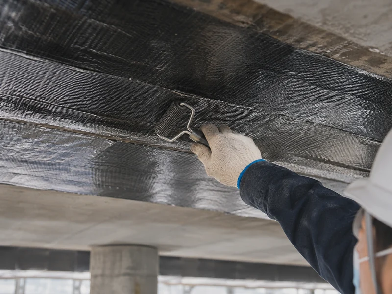

ARCHIVE
탄소섬유 보강 품질관리 — 현장에서 실제로 갈리는 항목
탄소섬유 보강은 완성되면 안이 보이지 않습니다. 바탕 조건과 표면처리, 함침과 섬유방향, 단부 정착, 접착 확인과 기록까지 시공 중에만 확인할 수 있는 항목을 정리했습니다.

1. 붙이고 나면 확인할 수 없습니다
탄소섬유 보강은 마감이 끝나면 시트 아래를 다시 볼 수 없습니다. 함침이 제대로 되었는지, 바탕이 건전했는지, 방향이 도면과 맞는지는 시공 중에만 확인할 수 있는 항목입니다. 그래서 이 공법에서는 장비보다 검사와 기록 체계가 먼저입니다.
아래 항목은 국가기준이 모든 소규모 민간공사에 일률적으로 요구하는 값이 아니라, 현장에서 문제가 실제로 발생하는 지점을 정리한 것입니다. 발주처 시방이나 공사시방서가 더 엄격한 기준을 요구하면 그쪽이 우선입니다.
2. 시공 전 — 바탕이 조건을 만족하는가
- 타진으로 들뜬 범위 확인 — 들뜬 부분 위에는 붙이지 않습니다
- 표면 강도와 건전성 확인 — 취약한 모체에서는 부착강도와 파괴모드가 달라집니다
- 철근 노출·녹물·박락 여부 — 있으면 단면복구가 먼저입니다
- 누수 여부 — 물이 흐르는 면에 그대로 보강하지 않습니다. 지수와 안정화가 선행됩니다
- 해안 구조물이면 염화물·탄산화·철근 상태 조사
3. 표면처리와 평활도
요철과 단차가 남아 있으면 시트가 바탕에서 떠서 붙습니다. 연마로 요철을 정리하고 퍼티로 단차를 조정합니다. 기둥이나 보를 감싸는 경우에는 모서리를 둥글게 다듬는 면접기가 필요합니다. 각진 모서리에서는 섬유가 꺾이면서 그 지점에 응력이 몰립니다.
4. 함침 — 시트가 수지를 머금어야 힘이 전달됩니다
탄소섬유시트는 그 자체로 판이 아니라 섬유 다발입니다. 수지가 섬유 조직 안까지 들어가 굳어야 비로소 하나의 재료로 힘을 받습니다. 함침이 부족하면 겉으로는 붙어 있어도 하중이 걸릴 때 층이 갈라집니다.
- 함침수지를 정해진 도포량으로 균일하게 바릅니다
- 탈포 롤러로 섬유 방향을 따라 밀어 기포를 빼냅니다
- 부착 후 상부에 함침수지를 다시 도포합니다
- 기포·주름·들뜸은 전면을 육안과 타진으로 확인합니다
기포 크기와 개수에 따른 보수 기준을 별도로 두는 공법 자료가 있지만, 이는 해당 시스템의 기준이며 모든 현장에 공통으로 적용되는 값은 아닙니다. 적용하는 시스템의 시방을 따릅니다.
5. 섬유방향과 겹침
섬유는 한 방향으로 힘을 받습니다. 방향이 도면과 다르면 보강 효과가 나오지 않습니다. 전수 확인 항목으로 두고, 겹침 길이와 이음 위치도 설계에서 정한 대로 시공되었는지 확인합니다.
6. 단부 정착 — 가장 자주 보고되는 실패모드
국내 실험 연구에서 보 하단에 시트를 붙이기만 한 방식에서는 단부 박리가 발생한 반면, 별도의 정착을 둔 방식에서는 인장파괴에 이를 때까지 더 나은 거동을 보였습니다.
즉 몇 겹을 붙였는가보다 끝단을 어떻게 잡아 두었는가가 결과를 가릅니다. 단부 상세는 구조설계에서 정해지는 항목이며, 시공에서는 그 상세가 도면대로 구현되었는지를 전수로 확인합니다.
7. 접착 확인 — KS F 2762의 위치
바탕면과 보수·보호재의 접착강도는 KS F 2762(콘크리트 보수·보호재의 접착 강도 시험 방법)의 방법으로 확인할 수 있습니다. 다만 이 표준은 시험하는 방법을 정한 것이지, 모든 보강 시스템에 공통으로 적용되는 합격강도를 정한 기준이 아닙니다.
그래서 회사 공통값으로 “몇 MPa 이상”을 미리 정해 두기보다, 구조설계에서 요구하는 값 + 채택한 시스템의 시방값 + 현장 시험값을 한 세트로 관리하는 편이 안전합니다. 시험 위치와 횟수도 현장 규모와 시방에 맞춰 계획합니다.
8. 작업환경과 재료 관리
- 기온·표면온도·습윤 상태 — 작업 시작 시점과 강우 후에 다시 확인
- 배합비 — 제조사가 정한 중량비를 배치마다 확인
- 가사시간 — 온도에 따라 크게 달라집니다. 넘긴 재료는 쓰지 않습니다
- 재료 로트번호·유효기간·시험성적서 — 입고 단위로 기록
- 양생 — 제품이 정한 조건과 시간 확보
9. 기록이 곧 품질 증거입니다
준공자료에 다음이 남아 있으면, 나중에 문제가 생겨도 무엇을 확인해야 하는지 바로 좁혀집니다.
- 시공 전·중·후 사진 — 위치를 알 수 있게 촬영
- 바탕 조사 결과와 단면복구 범위
- 재료 로트와 시험성적서
- 배합·가사시간·작업환경 기록
- 섬유방향·겹침·단부 검사 결과
- 접착 시험 결과와 시험 위치
10. 자주 나오는 실패 유형
- 바탕 콘크리트가 취약한 상태에서 보강해 계면이 아니라 모체가 떨어져 나가는 경우
- 함침 부족으로 시트가 층 분리되는 경우
- 기포와 들뜸을 남긴 채 마감한 경우
- 정착 상세 없이 끝단을 그대로 둬 단부에서 박리가 시작되는 경우
- 섬유방향이 설계와 어긋난 경우
- 철근부식을 처리하지 않고 시트로 덮어 안에서 부식이 계속 진행되는 경우
11. 제주 현장에서의 점검 시점
제주는 강수가 많고 태풍의 영향을 받습니다. 시공 직후의 검사만으로 끝내지 않고, 첫 큰 강우 이후와 태풍 이후를 점검 일정에 넣어 두는 편이 현실적입니다. 외벽·옥상·지하주차장·옹벽처럼 물과 바람에 직접 노출되는 부위에서 특히 그렇습니다.
여름철 일사를 직접 받는 외부 부재는 표면온도가 크게 올라갑니다. 접착 계면의 온도 조건은 재료 시방의 범위 안에 있어야 하므로, 표면온도를 실측하고 작업 시간대를 조정합니다.
12. 어떤 서비스로 이어지는가
보강 전 단계인 취약부 제거·철근 처리·단면복구는 콘크리트 보수보강에서 함께 진행합니다. 보강 원리와 적용 범위는 탄소섬유시트(CFRP) 구조보강에, 보강 전에 누수를 먼저 잡아야 하는 경우는 인젝션 특수방수에 정리되어 있습니다.